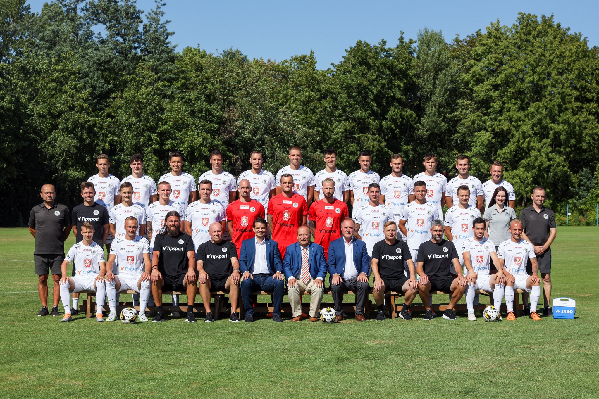

| Post | Jméno | Číslo |
|---|---|---|
| B | Patrik Vízek | 1 |
| Z | Vojtěch Smrž | 2 |
| Z | Jakub Kučera | 3 |
| Z | Petr Pudhorocký | 4 |
| O | Filip Čihák | 5 |
| Z | Lukáš Hájek | 6 |
| U | Filip Kubala | 9 |
| U | Matěj Trusa | 10 |
| B | Michal Reichel | 12 |
| O | Adam Gabriel | 13 |
| O | Jakub Klíma | 14 |
| U | Daniel Vašulín | 15 |
| Z | Filip Novotný | 16 |
| U | Pavel Dvořák | 17 |
| O | Michal Leibl | 18 |
| O | Ondřej Ševčík | 19 |
| B | Pavol Bajza | 20 |
| O | Štěpán Harazim | 21 |
| Z | Petr Kodeš | 22 |
| Z | Jakub Rada | 23 |
| Z | Matěj Ryneš | 24 |
| O | František Čech | 25 |
| O | Daniel Kutík | 26 |
| U | David Jurčenko | 27 |
| U | Matěj Koubek | 29 |